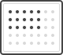

{{ title }}
View Analysis Results
Analyze Data
Analysis Results Name
{{ analysisName }}
Rename

{{ plateMapLabel }}
{{ readLabel }}
Cancel
Analyze
CellTiter-Glo
Name
Date
{{ r.name }}
{{ r.date }}
Cancel
{{ confirmLabel }}
{{ note }}